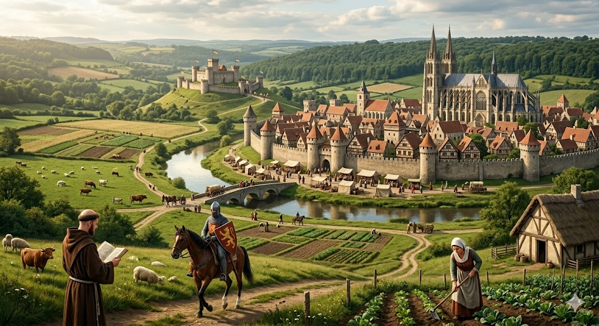
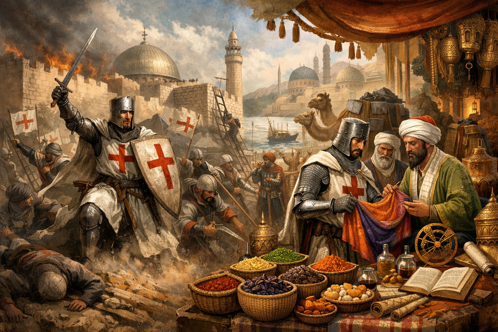

ca. 476 – 1492
De middeleeuwen vormen een boeiende periode van bijna duizend jaar in onze geschiedenis. Het is de tijd die volgt op de Klassieke Oudheid en eindigt bij de ontdekking van Amerika. In de eerste graad ontdekken we dat deze periode allesbehalve een "donkere tijd" was. Het was een tijd van ridders in kastelen en monniken in kloosters, maar ook van de opkomst van machtige steden zoals Brugge en Gent. Terwijl het Romeinse Rijk plaatsmaakte voor lokale koninkrijken, ontstonden er nieuwe manieren van samenleven, geloven en handelen die de basis legden voor het Europa van vandaag.

Na de val van het Romeinse Rijk bleef Europa niet lang een leegte. Terwijl de Romeinse wegen en steden langzaam in verval raakten, namen de Franken de fakkel over in onze streken. De belangrijkste figuur uit die tijd was Clovis. Hij slaagde erin de verschillende Frankische stammen te verenigen tot één groot rijk. Een cruciaal moment was zijn bekering tot het christendom. Hiermee smeedde hij een krachtige band met de restanten van de Romeinse cultuur en de Kerk. Zo ontstond er een mengelmoes van culturen die de basis legde voor wat wij vandaag Europa noemen. In deze periode verplaatste de macht zich van de steden naar het platteland.
Omdat er geen centraal bestuur of leger meer was zoals bij de Romeinen, ontstond het leenstelsel of de feodaliteit. De koning gaf stukken land in leen aan zijn vertrouwelingen (de adel) in ruil voor trouw en militaire steun. De gewone bevolking leefde in een standensamenleving. Bovenaan stond de geestelijkheid (die bad), gevolgd door de adel (die vocht) en onderaan de derde stand (die werkte). De meeste boeren waren horig: zij mochten het land van hun heer niet verlaten en moesten een deel van hun oogst afstaan in ruil voor bescherming.
Rond het jaar 800 bereikte het Frankenrijk zijn hoogtepunt onder Karel de Grote. Hij werd op kerstdag door de paus tot keizer gekroond, waarmee hij zich presenteerde als de opvolger van de Romeinse keizers. Karel voerde belangrijke vernieuwingen in: hij stimuleerde het onderwijs, voerde de zilveren penning in als munt en verdeelde zijn enorme rijk in graafschappen en hertogdommen om het beter te besturen. Na zijn dood viel dit rijk uiteen, wat de basis vormde voor de latere grenzen van Frankrijk en Duitsland.
In de middeleeuwen was religie allesbepalend. De Kerk controleerde het dagelijks leven en de wetenschap. Terwijl het christendom in Europa domineerde, ontstond in het Midden-Oosten de islam, die zich snel verspreidde. Vanaf 1095 riep de paus ridders op om op kruistocht te gaan naar het 'Heilige Land'. Hoewel deze oorlogen bloederig waren, zorgden ze ook voor een enorme boost in de handel en de ontdekking van nieuwe producten zoals specerijen, zijde en wetenschappelijke kennis uit het Oosten.

Vanaf de 11de eeuw verbeterde de landbouw, waardoor de bevolking groeide en er weer steden ontstonden. Vooral in het graafschap Vlaanderen werden steden als Brugge en Gent wereldberoemd door de lakenhandel. De burgers in de steden werden rijk en machtig; ze kochten stadsrechten af bij hun heer. Binnen de muren organiseren ambachtslieden zich in gilden. Een lokaal hoogtepunt van dit zelfbewustzijn was de Guldensporenslag op 11 juli 1302, waar Vlaamse milities de ridders van de Franse koning versloegen.
De 14de eeuw was een tijd van rampspoed, vooral door de Zwarte Dood (de pest) die vanaf 1347 een derde van de bevolking uitroeide. Dit zorgde echter ook voor sociale verschuivingen en meer vrijheid voor de overlevende boeren. De middeleeuwen eindigden rond 1492, het jaar dat Columbus Amerika bereikte. Samen met de uitvinding van de boekdrukkunst en de val van Constantinopel (1453) zorgde dit ervoor dat de wereld groter werd en de mens weer centraal kwam te staan.